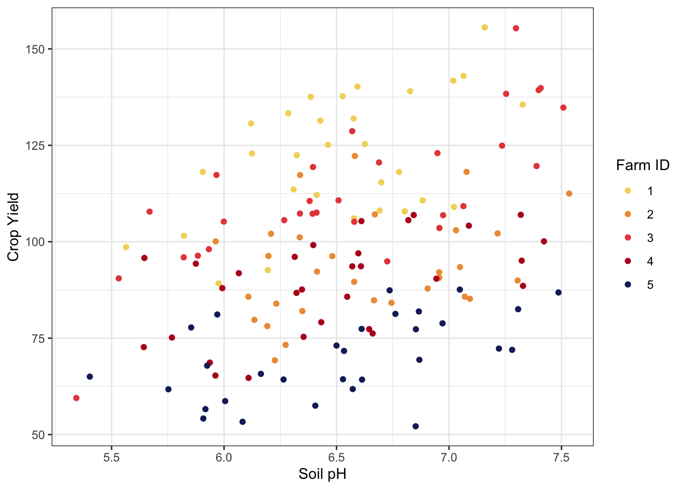
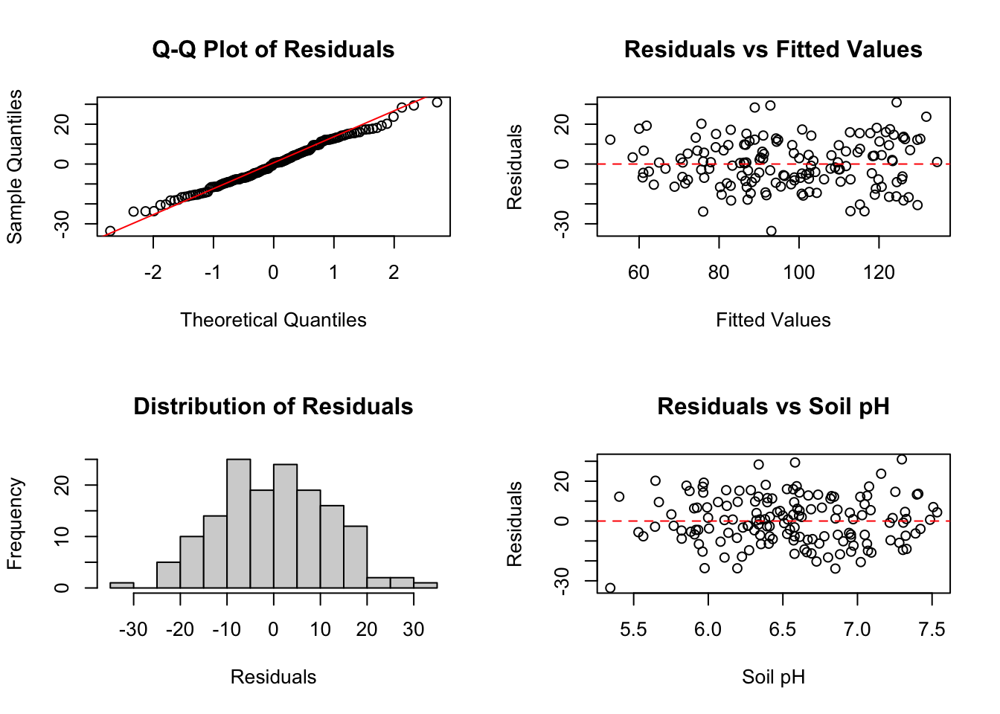
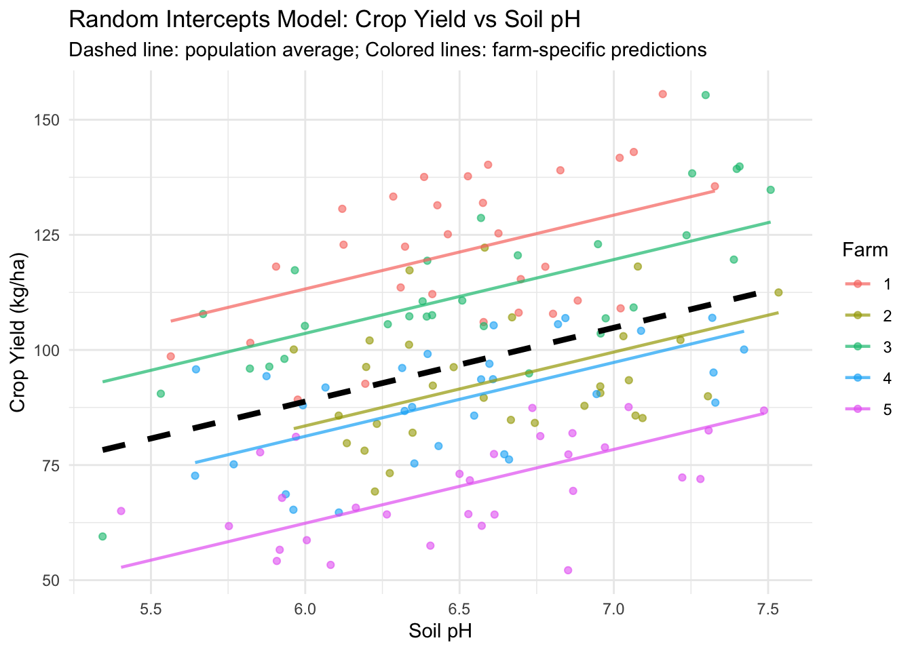

graph TD
Farm1[Farm 1]:::farm1
Farm2[Farm 2]:::farm2
Farm3[Farm 3]:::farm3
Farm1 --> P1[Plot 1]:::plot
Farm1 --> P2[Plot 2]:::plot
Farm1 --> P3[Plot 3]:::plot
Farm1 --> P4[Plot 4]:::plot
Farm1 --> P5[Plot 5]:::plot
Farm2 --> P6[Plot 6]:::plot
Farm2 --> P7[Plot 7]:::plot
Farm2 --> P8[Plot 8]:::plot
Farm2 --> P9[Plot 9]:::plot
Farm2 --> P10[Plot 10]:::plot
Farm3 --> P11[Plot 11]:::plot
Farm3 --> P12[Plot 12]:::plot
Farm3 --> P13[Plot 13]:::plot
Farm3 --> P14[Plot 14]:::plot
Farm3 --> P15[Plot 15]:::plot
classDef farm1 fill:#DEB887,stroke:#8B4513,stroke-width:5px,color:#000
classDef farm2 fill:#F4A460,stroke:#A0522D,stroke-width:5px,color:#000
classDef farm3 fill:#D2B48C,stroke:#8B7355,stroke-width:5px,color:#000
classDef plot fill:#FFFFFF,stroke:#000000,stroke-width:4px,color:#000
Mixed-Effects Models: A Practical Guide
Abstract
This research guide provides a comprehensive introduction to linear mixed-effects models. We begin with a discussion of the intuition behind mixed models, covering both theoretical foundations and practical implementation in R and Julia. Through a concrete example, we demonstrate how mixed models account for hierarchical data structures and within-group correlation.
Keywords
mixed-effects models, hierarchical models, multilevel models, random effects, variance components, longitudinal data, clustered data, R, Julia, lme4, MixedModels.jl
Introduction
In standard linear regression we are interested in estimating the relationship between one or more independent variable(s), \(X\) (also known as predictors, explanatory variables, or fixed effects), and some dependent variable \(Y\). However, often we encounter a fundamental problem early on in the analysis process when we recognize that, frustratingly, many datasets have hierarchical observation structures which are not independent (a requirement of simple linear regression). This non-independence can take many forms, but might be repeated measures on patients, measures on groups of students nested in schools, or experimental plots nested in different study fields. To deal with this challenge, researchers typically turn to an approach we call a mixed-effects model, which is an extension of a standard linear model as described above, typically containing only fixed effects. The key addition is the notion of a random effect, defined below, which allows for the accounting of within-group correlation, while also facilitating inference about both group-specific and population-level effects.
To define a mixed-effects model, we can introduce a new concept, known as a random effect (also known as a varying effect). However, we immediately find ourselves in definition jail with respect to what, specifically, a random effect means relative to a fixed effect.
Definition
Mixed-effects models in this context are models that include both (1) fixed effects, and (2) random effects. The definitions for such terms have been fought over in the literature for decades, but here we follow the definition of Gelman (2005), such that fixed effects are used to mean the effects or coefficients that are identical for all groups in a population, and random effects are those which are allowed to differ from group to group.
We will explain further what we mean by this, but aim to put this warning front and centre should someone be looking for a “mixed-effects” model containing the type of “fixed effect” often referred to econometrics literature that has an entirely different interpretation.
In this guide we’ll go over the formalism behind this kind of approach, when it’s useful, and how to implement a mixed-effects model in common programming languages.

We’ll also focus mainly on mixed-effects models with random intercepts, but will discuss the existence briefly of random slopes, and thus, random effects models. The formulation will be consistent with the classic frequentist approach & language. We assume you’re familiar with the representation of fixed effects and simple linear regression in Figure 1.
Methods
Theoretical Intuition
Imagine we’re conducting a study investigating the effect of soil pH on crop yield. We have a number of experimental plots, which are nested within farms across different regions. Since each farm contributes multiple plots, we end up with a hierarchical data structure where observations within farms cannot be assumed independent. The set-up, visually, may look something like this:
This is exactly the use case for something like mixed-effects models. Such an approach allows us to account for within-group correlation while doing inference about both group-specific and population-level effects. To formalize this, say our simple linear model is
\[\begin{equation} Y_{ij} = \beta_0 + \beta_1 x_{ij} + \epsilon_{ij} \end{equation}\]where we have measurements of crop yield, \(y_{ij}\) in plots \(i\), nested within farm \(j\), as well as some soil pH levels, \(x_{ij}\). It follows that we may want to understand if there is some effect of the fixed effect soil pH on the crop yield. That is, we might want to do some form of standard linear regression to learn about our \(\beta\) values. But, we’re faced with the possibility that each farm has characteristics specific to itself that may influence the crop yield. This could be a variety of different features, but often we can assume that some or all of them are unobserved.
Therefore, we can use a random effect to help control for this unobserved dependence.
Random Effects
In the most general sense, assume that there is some variable which takes \(k\) possible values and is related to a response variable via a regression model. If there is some linear predictor that can be generated from this, we could construct the model (with no fixed effect) as \[Y_{ij} = \beta_0 + \alpha_j + \epsilon_{ij}\] with \(j = 1, ..., k-1\), where \(i\) indexes the possible values of the explanatory variable, and \(\epsilon\) is some error term. In our example, we consider \(j\) to be indicators of which farm our samples are coming from. These \(\alpha_j\)’s are referred to as random effects if they can be thought to arise from some random sample of a distribution, independent and identically distributed (i.i.d.) \[\alpha_j \mathop\sim^{i.i.d.} N(0, \sigma^{2}_{\alpha}).\] This looks very similar to a fixed effects model, but importantly, in the frequentist space, we consider fixed effects to be fixed, unknown parameters, whereas these are (of course), random. This means that with our simple model, we have the expected value of \(Y_{ij}\) being \[E[Y_{ij}] = \beta_0,\] and the variance is \[Var(Y_{ij}) = \sigma_{\alpha}^2 + \sigma^2.\] Importantly, we’re then left with a correlation structure \[\begin{align} \text{Cor}(Y_{ij},Y_{kl}) = \begin{cases} 0& i\neq k \\ \sigma^2_{\alpha}/(\sigma^2_{\alpha} + \sigma^2)& i=k,j \neq l \\ 1& i = k, j = l \end{cases} \end{align}\]
What this correlation structure tells us is essential for interpreting random effects. Essentially, observations from different farms (the \(i \neq k\) case) are uncorrelated, while observations from the same farm (\(i=k\) case) are indeed correlated. This form of correlation has a few different terms, but we follow the common term of intraclass correlation (ICC), and is given as in the above equation, as \(\sigma^2_{\alpha}/(\sigma^2_{\alpha} + \sigma^2)\). If the ICC is large, observations from the same farm are much more similar than observations from different farms.
Random Intercepts Model
Now that we have a foundation of a random effect, let us consider them in the context where there is also a fixed effect that we wish to estimate. The model, as we wrote it before, will now include our single fixed effect of interest, and our random effect of farm.
\[Y_{ij} = \beta_0 + \beta_1 X_{ij} + \alpha_j + \epsilon_{ij}\]
This is to be interpreted, in plain english, as a simple linear mixed-effects model with a fixed effect of soil pH, and a random effect on farm. In this formulation, we are assuming that our random effect takes the form of a random intercept. Which is to say, we assume the relationship between soil pH and yield to operates with the same form in each place, but that there are likely differences in soil pH generally between farm locations. So the per-unit change of \(X_{ij}\) leads to the same per-unit change in \(Y_{ij}\), and therefore we can estimate one population-level \(\beta\) value. Let’s visualize this:

In Figure 3 we can clearly see that there is a discernable relationship between points of the same colour, but, at least looking at it, we can see that the the relationship between the two variables are probably linear. We can preview what will come out of our analysis by putting some lines through each set of points.
Show the code
# we'll show how to read in this data example later on!
ggplot(data = field_data) +
geom_point(aes(x = soil_pH, y = yield, colour = farm_id)) +
geom_smooth(
aes(
x = soil_pH, y = yield,
group = farm_id, colour = farm_id
),
method = lm
) +
theme_bw() +
labs(x = "Soil pH", y = "Crop Yield") +
scale_colour_manual("Farm ID", values = MoMAColors::moma.colors("OKeeffe"))
There are some obvious differences here in Figure 4, and it appears as though perhaps the intercepts for the different farms might be different. Having done this brief visualization, let’s look at how we can actually estimate our model.
Formalism
Note
If you don’t especially care about how all of this works under the hood, but have read up to this point, you can probably safely skip to Implementation section below 😁.
So that we do not lose generality, let us consider the model where there are two random variables: \(\mathcal{Y}\), the \(n\)-dimensional vector of responses, and \(\mathcal{B}\), the \(q\)-dimensional vector of random effects. We of course observe some value of \(\mathcal{Y}\), which we note as \(\mathbf{y}\), but based on how we defined a random effect as a random variable, we definitionally do not observe the value \(\mathbf{b}\) of \(\mathcal{B}\).
The unconditional distribution of \(\mathcal{B}\) (that is, the distribution before we observe any data) is given by \(\mathcal{B}\sim\mathcal{N}(\mathbf{0},\Sigma_\theta)\), where \(\Sigma_\theta\) is a variance-covariance matrix that depends on our variance-component parameter, \(\theta\). The variance-component parameter \(\theta\) controls how much variation we expect to see in our random effects. In the simplest case of a random intercept model, \(\theta\) might be a single number that determines the standard deviation of the random intercepts. In our soil pH example, this would control how much we expect the baseline crop yield to vary from field to field. In more complex models, \(\theta\) can be a vector of multiple parameters that control not just the variance of different random effects, but also how they covary with each other. For instance, if we had both random intercepts and random slopes for pH effect by field, \(\theta\) would include parameters controlling the variance of intercepts, the variance of slopes, and the correlation between them.
In this case, we end up with a linear predictor \(\mathbf{X}\beta + \mathbf{Z}\mathbf{b}\), which is the conditional mean of \(\mathcal{Y}\), given \(\mathcal{B} = \mathbf{b}\). Since we are dealing with the linear mixed-effects model case for now, the conditional distribution \((\mathcal{Y}|\mathcal{B}=\mathbf{b})\) is given by \[ (\mathcal{Y}|\mathcal{B}=\mathbf{b}) \sim \mathcal{N}(\mathbf{X}\beta + \mathbf{Z}\mathbf{b}, \sigma^2 \mathbf{I}),\] where \(\mathbf{I}\) is the identity matrix.
To make the computational machinery work more efficiently, we introduce what are called spherical random effects, denoted \(\mathcal{U}\). The term “spherical” here refers to random effects that have been standardized so that they have no correlation with each other and all have the same variance. Think of this as similar to converting raw test scores to z-scores. These spherical random effects are related to our actual random effects through the transformation \[\mathcal{B}=\Lambda_\theta\mathcal{U},\] where \(\Lambda_\theta\) is called the relative covariance factor. This transformation essentially allows us to work with a simpler, standardized version of the problem during computation, then transform back to get results on the original scale. In our soil pH example, if we had random effects for different fields that were correlated (perhaps because nearby fields share soil characteristics), the spherical random effects would represent a transformed version where those correlations have been removed.
This is where the rubber meets the road computationally. We arrive at the challenge of computing the maximum likelihood estimation of the variance-component parameter \(\theta\), which we term \(\hat{\theta}\), that minimizes what is called the profiled log-likelihood. The actual value of \(\hat{\theta}\) is obtained through numerical optimization, the details of which will depend on the software package at hand. In the process of evaluating our profiled log-likelihood and finding this optimal \(\hat{\theta}\), we simultaneously obtain several other quantities: \(\hat{\beta}\), which is our estimate for the coefficients of the fixed effects, and \(\tilde{\mathbf{u}}_{\hat{\theta}}\), which is the conditional mode of the spherical random effects \(\mathcal{U}\) (that is, the value of \(\mathbf{u}\) that is most likely given the data we observed).
We then transform these conditional modes of the spherical random effects back to the original scale of our random effects using \[\tilde{\mathbf{b}}_{\hat{\theta}} = \Lambda_{\hat{\theta}}\tilde{\mathbf{u}}_{\hat{\theta}}.\] These values \(\tilde{\mathbf{b}}_{\hat{\theta}}\) represent the values of \(\mathbf{b}\) that maximize the density of the conditional distribution \(\mathcal{B}|\mathcal{Y} = \mathbf{y}\). In plain language, these are our best guesses for the random effect values given the data we actually observed. You will often see these called the best linear unbiased predictors (BLUPs) or conditional modes. In our soil pH example, these would be the estimated effect of each specific field on crop yield. For a linear mixed model where all distributions are Gaussian (normal), these conditional modes are also equal to the conditional means, which is a convenient mathematical property.
Estimation via (Restricted) Maximum Likelihood
When we use mixed-effects models, we often fit the models via a maximum liklihood estimation proceedure, with the most common form of it being restricted maximum liklihood (REML). More details about this method along with some notes ot pay attention to are in the appendix on REML
Why restricted? Maximum likelihood estimation of variance components in mixed-effects models suffers from a well-known deficiency: the estimates are biased downward because the procedure fails to account for the degrees of freedom consumed in estimating the fixed effects, much as the sample variance requires division by \(n-1\) rather than \(n\) to correct for the estimation of the mean. Restricted maximum likelihood remedies this problem by basing inference on \(n-p\) error contrasts—linear combinations of the data that contain no information about the fixed effects—thereby properly accounting for the uncertainty introduced by estimating \(\beta\). While REML produces less biased estimates of variance components and is thus preferred for final model fitting, it cannot be used to compare models with different fixed effects structures, as the restricted likelihoods under different fixed effects specifications involve different transformations of the data and are therefore not comparable. Consequently, the recommended practice is to use ordinary maximum likelihood when selecting among competing fixed effects structures via likelihood ratio tests or information criteria, and then to refit the chosen model using REML to obtain optimal estimates of the variance components.
Assumptions
Many of the assumptions of a linear mixed effect model are the same as a standard linear model, which are covered in the OLS regression research guide. Briefly, the most important assumptions are:
- Linearity: The relationships between the predictors and the response variable are linear
- Independence of residuals: Conditional on the fixed and random effects, the residuals are independent of each other.
- Normality of residuals: The residuals are normally distributed.
- Constant variance of residuals (Homoscedasticity): The spread of the residuals is consistent across all levels of the predictors.
- No multicollinearity: The independent variables are not strongly correlated with one another.
- Normal distribution of random effects: The random effects are assumed to be normally distributed
Checking these (mostly) occurs after the model is fit or at the experimental design stage, so we’ll focus exclusively on the assumptions that can be checked once a model has been fit or during the fitting process.
Implementation
In this section we go over how to actually fit these models in programatic softwares.
With Great (Computational) Power Comes Great Responsibility
Modern statistical softwares, as you are about to see, have come a long way in terms of making computing these actually very complex models, very easy. One can fit a linear mixed-effects model in R in as few as 10 lines of code. We wish to stress that this simplicity of implementation is not to be confused with simplicity of the method.
There are a lot of important details going on under the hood, and it is any responsible researcher’s duty to ensure that they themselves are sufficiently aware of the eccentricites of their own data, model, and software to reliably interpret results. Just because the code ran doesn’t mean your answer is correct, and it is almost always worth reading the excellent documentation for whatever methods you’re using (in this case, the lme4 package for R and the MixedModels.jl package for Julia.)
Random Intercepts Model
Recall our soil pH and crop yield example where we showed a quick plot in Figure 4 indicating that there were almost certainly differences between our farms in terms of their intercepts. So, we can simply fit a linear mixed-effects model, with the goal of estimating a (fixed) effect of soil pH on crop yield (i.e., what is the “slope” of the relationship), and a random effect on the intercept (i.e., what are the intercepts of each farm). Quickly, let’s set up our model.
In our soil pH example, our statistical model is \[Y_{ij} = \beta_0 + \beta_1 X_{ij} + \alpha_{j} + \epsilon_{ij}\] where \(Y_{ij}\) is the measurement of crop yeild at plot \(i\) in farm \(j\), \(\beta_0\) is our population-level intercept, \(\beta_1\) is the to-be-estimated effect or coefficient of \(X_{ij}\), the measurement of soil pH at plot \(i\) in farm \(j\), \(\alpha_j\) is the random effect on the intercept for each group (farm), \(j\), and then \(\epsilon\) is our error term.
We need to translate this into code. In these languages, we use what’s called a formula to describe our statistical model. The general form of that formula is:
response ~ 1 + fixed_effect + (1|random_intercept)where we can add arbitrarily many fixed effects, e.g.,
response ~ 1 + fixed_effect_1 + fixed_effect_2 + (1|random_intercept_1) + (1|random_intercept_2)
Note
Here, in our formula, you’ll notice we have this ... ~ 1 + ... hanging out in the middle. This explicitly indicatess the presence of an intercept term in the model (i.e. the code-equivalent of \(\beta_0\) in our model equation). In most statistical software packages, it’s assumed that an intercept will be present, since models without them are rare.
The interpretation of the intercept in this case is the intercept would represent the expected crop yield when pH equals zero (which would be nonsensical in practice, but that is its mathematical interpretation). The model would estimate this baseline value along with the effect of changing pH. In most formula interfaces, including R and Julia’s, an intercept is included by default even if you don’t write one. This means that response ~ fixed_effect and response ~ 1 + fixed_effect are equivalent and both include an intercept. Here, we believe it’s optional, but will always include it for clarity, and encourage others to do the same.
Now, to some code! Let’s first get a sense of what our data actually look like for this example.
# some set up!
library(readr)
library(here)
# load in the data from our local location
field_data <- read_csv(
here("./research-guides/mixed-effects-models/data/crop_yield_data.csv"),
show_col_types = FALSE
)
head(field_data)# A tibble: 6 × 4
farm_id plot_id soil_pH yield
<dbl> <dbl> <dbl> <dbl>
1 1 1 7.06 143.
2 1 2 6.58 106.
3 1 3 6.32 122.
4 1 4 6.39 138.
5 1 5 6.41 112.
6 1 6 6.19 92.7# some set up!
using DataFrames, CSV, Base.Filesystem
# project_root = @__DIR__ # if we need to double check where the directory is pointing rn
# load the data from local location
field_data = CSV.read(
joinpath(@__DIR__, "./data/crop_yield_data.csv"),
DataFrame
)150×4 DataFrame
Row │ farm_id plot_id soil_pH yield
│ Int64 Int64 Float64 Float64
─────┼─────────────────────────────────────
1 │ 1 1 7.06464 143.0
2 │ 1 2 6.57797 106.061
3 │ 1 3 6.32341 122.438
4 │ 1 4 6.38518 137.577
5 │ 1 5 6.41172 112.132
6 │ 1 6 6.19462 92.6556
7 │ 1 7 7.32745 135.555
8 │ 1 8 5.90546 118.104
⋮ │ ⋮ ⋮ ⋮ ⋮
144 │ 5 144 5.40329 65.022
145 │ 5 145 5.96985 81.1347
146 │ 5 146 6.85269 77.3114
147 │ 5 147 6.1639 65.7406
148 │ 5 148 6.52858 64.3481
149 │ 5 149 6.86806 69.387
150 │ 5 150 6.73596 87.4023
135 rows omittedWe’re dealing with clean data in this case, so we’re skipping some common data cleaning steps that may normally come here.
Fitting the model
Without further ado, let’s actually fit our models.
library(lme4, quietly=TRUE)
library(ggplot2)
# random intercepts model
model_ri <- lmer(
yield ~ 1 + soil_pH + (1|farm_id),
data = field_data,
REML = TRUE
)
# this shows the model summary
summary(model_ri)Linear mixed model fit by REML ['lmerMod']
Formula: yield ~ 1 + soil_pH + (1 | farm_id)
Data: field_data
REML criterion at convergence: 1184.4
Scaled residuals:
Min 1Q Median 3Q Max
-2.77492 -0.67190 0.03397 0.78095 2.55810
Random effects:
Groups Name Variance Std.Dev.
farm_id (Intercept) 405.1 20.13
Residual 146.5 12.10
Number of obs: 150, groups: farm_id, 5
Fixed effects:
Estimate Std. Error t value
(Intercept) -7.407 15.921 -0.465
soil_pH 16.034 2.002 8.007
Correlation of Fixed Effects:
(Intr)
soil_pH -0.823using MixedModels, StatsBase, StatsModels
# random intercepts model (structure essentially identical)
model_ri = fit(
MixedModel,
@formula(yield ~ 1 + soil_pH + (1 | farm_id)),
field_data,
REML=true
) # model summary displayed automaticallyLinear mixed model fit by REML
yield ~ 1 + soil_pH + (1 | farm_id)
REML criterion at convergence: 1184.4262456837705
Variance components:
Column Variance Std.Dev.
farm_id (Intercept) 405.0656 20.1262
Residual 146.5110 12.1042
Number of obs: 150; levels of grouping factors: 5
Fixed-effects parameters:
──────────────────────────────────────────────────
Coef. Std. Error z Pr(>|z|)
──────────────────────────────────────────────────
(Intercept) -7.40672 15.9206 -0.47 0.6418
soil_pH 16.0336 2.00237 8.01 <1e-14
──────────────────────────────────────────────────Ok so the model summaries both provide some key pieces of interformation. Perhaps most importantly, and what most people want to see right away is the population-level intercept and the effect of soil pH on crop yield (under the “Fixed Effects” header for R and the “Fixed-effects parameters” header for Julia). As a reminder, these two terms essentially refer to (a) the (nonsensical but instructive) estimated values of yeild should soil pH be 0, and (b) coefficient or slope that tells us what the per-unit change in yield is from a per-unit change in soil pH. The random effects section quantifies the variation attributable to differences between farms (the between-farm variance) and the residual variation within farms (the within-farm variance). These variance components allow us to partition the total variation in crop yield into systematic farm-level differences and plot-level residual variation.
The ratio of these variance components is informative. A large farm-level variance relative to the residual variance indicates substantial heterogeneity between farms, justifying our decision to use a mixed-effects model rather than ordinary least squares regression. We can calculate the intraclass correlation coefficient to quantify the proportion of total variance attributable to farm-level differences.
# get out the variance components
var_components <- as.data.frame(VarCorr(model_ri))
farm_var <- var_components$vcov[1]
residual_var <- var_components$vcov[2]
# calculate icc manually
icc <- farm_var / (farm_var + residual_var)
cat("Intraclass Correlation Coefficient:", round(icc, 3), "\n")Intraclass Correlation Coefficient: 0.734 # get out the variance components
vc = VarCorr(model_ri);
farm_var = vc.σρ.farm_id.σ[1]^2;
residual_var = vc.s^2;
# calculate icc manually
icc = farm_var / (farm_var + residual_var);
println("Intraclass Correlation Coefficient: ", round(icc, digits=3))Intraclass Correlation Coefficient: 0.734That’s a pretty high value!
Assumption Checking
Great, the models are fit, and we can interpret our results. Before we do so however, we need to verify the assumptions underlying our inferences. As discussed earlier, several assumptions must hold for our model to provide valid estimates and appropriate uncertainty quantification.
Residual Diagnostics
We begin by examining the residuals for evidence of normality and homoscedasticity. The residuals should be approximately normally distributed and should exhibit constant variance across the range of fitted values.
# residuals and fitted values
field_data$residuals <- residuals(model_ri)
field_data$fitted <- fitted(model_ri)
# diagnostic plots
par(mfrow = c(2, 2))
# Q-Q plot for normality of residuals
qqnorm(field_data$residuals, main = "Q-Q Plot of Residuals")
qqline(field_data$residuals, col = "red")
# homoscedasticity check
plot(field_data$fitted, field_data$residuals,
xlab = "Fitted Values", ylab = "Residuals",
main = "Residuals vs Fitted Values")
abline(h = 0, col = "red", lty = 2)
# residuals
hist(field_data$residuals, breaks = 20,
main = "Distribution of Residuals",
xlab = "Residuals")
# residuals vs predictor
plot(field_data$soil_pH, field_data$residuals,
xlab = "Soil pH", ylab = "Residuals",
main = "Residuals vs Soil pH")
abline(h = 0, col = "red", lty = 2)
par(mfrow = c(1, 1))using Plots, Distributions, StatsPlots
# extract residuals and fitted values
field_data.residuals = residuals(model_ri);
field_data.fitted = fitted(model_ri);
# Q-Q plot of residuals
p1 = plot(qqplot(Normal, field_data.residuals),
xlabel="Theoretical Quantiles",
ylabel="Sample Quantiles",
title="Q-Q Plot of Residuals",
legend=false);
# homoscedasticity
p2 = scatter(field_data.fitted, field_data.residuals,
xlabel="Fitted Values",
ylabel="Residuals",
title="Residuals vs Fitted Values",
legend=false,
alpha=0.6);
hline!([0], color=:red, linestyle=:dash);
# hist of residuals
p3 = histogram(field_data.residuals,
xlabel="Residuals",
ylabel="Frequency",
title="Distribution of Residuals",
legend=false,
bins=20);
# residuals vs predictor
p4 = scatter(field_data.soil_pH, field_data.residuals,
xlabel="Soil pH",
ylabel="Residuals",
title="Residuals vs Soil pH",
legend=false,
alpha=0.6);
hline!([0], color=:red, linestyle=:dash);
plot!(p1, p2, p3, p4, layout=(2, 2), size=(1100, 900))
The Q-Q plot allows us to assess whether the residuals follow a normal distribution. Points should fall approximately along the diagonal line, with systematic departures indicating non-normality. The residuals versus fitted values plot assesses homoscedasticity. We look for a random scatter of points around zero with no systematic patterns such as funneling or curvature. The residuals versus predictor plot serves a similar purpose, checking whether the variance changes systematically with soil pH. All of these look quite good. And reassuringly, we can check our outputs from both languages (R and Julia) and see the results thus far are the same!
Interpreting Residual Plots
When examining residual plots, we are looking for the absence of patterns rather than the presence of specific features. A good residual plot shows points scattered randomly around zero with no trends, curves, or changes in spread. The reason for this is that patterns in these plots indicate violations of model assumptions that may require remedial action such as transformations or different model specifications. If you can’t see anything interesting, the plots pass the check.
Random Effects Diagnostics
We must also verify that the random intercepts are approximately normally distributed. Let’s extract the best linear unbiased predictors (BLUPs) or conditional modes for each farm and examine their distribution.
One thing to note is that the number of levels we have for our random effect is small, since this is an example dataset. It’s generally a rule of thumb that one should have minimum five levels (which is what we do) to justify a random effect. Below five levels can be possible if one isn’t interested in making inference about the random effect itself, but five is the bare minimum, typically.
Since we have a very small number of levels in our random effect, we can’t do something like a Shapiro-Wilk test to check for normality, and we have to rely on the Q-Q plot, even though that as well is a challenge to assess with such few levels. In this case, we’re looking for large, obvious deviations from our straight line.
# get random effects
random_effects <- ranef(model_ri)$farm_id
names(random_effects) <- "intercept"
# Q-Q plot on random effects
par(mfrow = c(1, 2))
qqnorm(random_effects$intercept,
main = "Q-Q Plot of Random Intercepts")
qqline(random_effects$intercept, col = "red")
# hist of random effects
hist(random_effects$intercept, breaks = 10,
main = "Distribution of Random Intercepts",
xlab = "Random Intercept")
par(mfrow = c(1, 1))# extract via ranef but then turn from Vector{Matrix{Float64}} to just a flat
# vector for easy plotting
random_effects = vec(reduce(vcat, ranef(model_ri)));
# Q-Q plot for random effects
p1 = plot(qqplot(Normal, random_effects),
xlabel="Theoretical Quantiles",
ylabel="Sample Quantiles",
title="Q-Q Plot of Random Intercepts",
legend=false);
# hist of random effects
p2 = histogram(random_effects,
xlabel="Random Intercept",
ylabel="Frequency",
title="Distribution of Random Intercepts",
legend=false,
bins=10);
plot(p1, p2, layout=(1, 2), size=(800, 350))
The distribution of random intercepts reveals whether our assumption of normally distributed farm effects is reasonable. Substantial departures from normality may indicate the presence of outlying farms or suggest that the random effects structure requires modification.
Visualizing the Fitted Model
Having verified that our model assumptions are reasonably satisfied, we can proceed to visualize the fitted relationships. These visualizations serve both to communicate our findings and to provide a final informal check of model adequacy. Importantly, this will involve us calculating our model predictions. Our model predictions will allow us to look at how our model creates a smooth relationship between our variables of interest.
# get a sequence of pH values for prediction
ph_range <- seq(min(field_data$soil_pH),
max(field_data$soil_pH),
length.out = 100)
# Population-level (fixed effects) prediction
pop_pred <- predict(model_ri,
newdata = data.frame(soil_pH = ph_range),
re.form = NA)
# plot
ggplot(field_data, aes(x = soil_pH, y = yield)) +
# put the individual farms
geom_point(aes(color = factor(farm_id)), alpha = 0.6) +
# now farm-specific lines
geom_line(aes(y = fitted, group = farm_id, color = factor(farm_id)),
linewidth = 0.8, alpha = 0.7) +
# now the trend overall
geom_line(data = data.frame(soil_pH = ph_range, yield = pop_pred),
aes(x = soil_pH, y = yield),
color = "black", linewidth = 1.5, linetype = "dashed") +
labs(x = "Soil pH",
y = "Crop Yield (kg/ha)",
title = "Random Intercepts Model: Crop Yield vs Soil pH",
subtitle = "Dashed line: population average; Colored lines: farm-specific predictions",
color = "Farm") +
theme_minimal() +
theme(legend.position = "right")
# get a sequence of pH values for prediction
ph_range = collect(range(minimum(field_data.soil_pH),
maximum(field_data.soil_pH),
length=100));
# Population-level (fixed effects) prediction
pop_pred_data = DataFrame(
soil_pH=ph_range,
farm_id=repeat(["Farm_01"], Base.length(ph_range)),
yield=zeros(Base.length(ph_range))
);
pop_pred = predict(model_ri, pop_pred_data, new_re_levels=:population);
# plot
p = scatter(field_data.soil_pH, field_data.yield,
group=field_data.farm_id,
xlabel="Soil pH",
ylabel="Crop Yield (kg/ha)",
title="Random Intercepts Model: Crop Yield vs Soil pH",
alpha=0.6,
markersize=4,
legend=:outerright,
label=permutedims(unique(field_data.farm_id)));
# add farm-specific fitted lines
for farm in unique(field_data.farm_id)
farm_data = field_data[field_data.farm_id.==farm, :]
plot!(farm_data.soil_pH, farm_data.fitted,
label="",
linewidth=2,
alpha=0.7)
end
# add population-level trend finally
plot!(ph_range, pop_pred,
color=:black,
linewidth=2,
linestyle=:dash,
label="Population Average",
size=(1100, 900))
This nice plot we’ve made here illustrates the essential structure of the random intercepts model. Each farm has its own fitted line, all sharing the same slope (the effect of soil pH) but with different intercepts reflecting farm-specific baseline productivity. The population-average line represents the expected relationship for a typical farm, averaged across all farm-level variation. The parallel nature of the farm-specific lines reflects our model assumption that the effect of soil pH does not vary across farms—an assumption we could relax if considering random slopes models.
Model Interpretation
The fixed effect of soil pH represents the expected change in crop yield per unit increase in pH, averaged across all farms. The random intercepts capture farm-specific deviations from the population mean, representing unmeasured characteristics that make some farms systematically more or less productive than others. This decomposition allows us to make both farm-specific predictions (incorporating the farm’s baseline productivity) and population-level inferences (describing the typical relationship between pH and yield).
FAQs
When should I use a mixed model instead of traditional regression?
Use mixed models when your data has a natural grouping or clustering structure and observations within groups are likely correlated. Examples include repeated measures on the same subjects, students within schools, or spatial clusters. You cannot just ignore this variation. If you ignore this structure, your standard errors will be wrong and your inferences invalid!
I’m working in R/Julia and want to know more about some of the code I’m trying to use
You should check out the excellent documentation that exits for both resources. The lme4 package has the docs of course, but it also has a paper attached to it (Bates et al. 2014) which also may be helpful. The Julia MixedModels.jl docs maintained by Alday and Bates (2025) are excellent.
How do I decide what to include as random effects?
An age old question! Often, depending on what kind of inference you want to make, the same effects could be considered either fixed OR random. Start by identifying the grouping structure in your data. Include random intercepts for grouping factors where you expect baseline differences across groups. Be parsimonious: more complex random effects structures require more data to estimate reliably. A common rule of thumb is to have at least 5-10 groups per random effect parameter.
I have a random effect on my intercept, but I think that within my groups, the relationship between my fixed effect and my response will be different. What should I do?
You are no longer talking about a fixed effect! That, referencing Figure 1, you are now interested in a purely random effects model. Proceed with the fitting of the model the same way you would otherwise in most cases, after consulting a suitable text.
What’s the difference between ML and REML estimation?
REML (Restricted Maximum Likelihood) is generally preferred because it produces unbiased estimates of variance components. However, you can’t use it for model comparison. Use ML when comparing models with different fixed effects structures using likelihood ratio tests, then refit the final model with REML. For comparing models with different random effects, either ML or REML is appropriate.
What if I don’t have normal data (e.g. binomial, count data, etc)?
Then you’re looking for a generalized linear mixed-effects model (GLMM). The concepts underpining a GLMM are very similar with respect to the effects and the intuition, but require some extra care. Fitting them can be challenging, though many excellent resources exist to help you fit them out of the box. Bolker et al. (2009) is a very accessible introduction to the topic.
How do I assess model fit for mixed models?
Unlike OLS regression, \(R^2\) is more complex for mixed models. Use conditional \(R^2\) (variance explained by fixed and random effects) and marginal \(R^2\) (variance explained by fixed effects only). Information criteria (AIC, BIC) are useful for model comparison. For validation, consider cross-validation at the group level.
Can I include both spatial and temporal correlation structures?
Yes, but this requires careful consideration. Packages like nlme in R allow you to specify complex correlation structures within groups. However, computational demands increase substantially. For spatiotemporal data, consider whether the spatial correlation is adequately captured by random effects or whether you need explicit correlation structures.
References
Alday, Phillip M, and Douglas Bates. 2025. “MixedModels.jl.” Computer software. Zenodo. https://doi.org/10.5281/ZENODO.596435.
Bates, D, M Machler, B Bolker, and Steven C Walker. 2014. “Fitting Linear Mixed-Effects Models Using lme4.” Journal of Statistical Software 67 (June): 1–48. https://doi.org/10.18637/JSS.V067.I01.
Bolker, Benjamin M, Mollie E Brooks, Connie J Clark, Shane W Geange, John R Poulsen, M Henry H Stevens, and Jada-Simone S White. 2009. “Generalized Linear Mixed Models: A Practical Guide for Ecology and Evolution.” Trends in Ecology & Evolution 24 (March): 127–35. https://doi.org/10.1016/j.tree.2008.10.008.
Gelman, Andrew. 2005. “Analysis of Variance - Why It Is More Important Than Ever.” Annals of Statistics 33 (February): 1–53. https://doi.org/10.1214/009053604000001048.
Midway, Steve. 2022. “Chapter 9 Random Effects.” July 13, 2022. https://bookdown.org/steve_midway/DAR/random-effects.html.
Some Suggestions for Core Textbooks:
- Gelman, Andrew, and Jennifer Hill. Data Analysis Using Regression and Multilevel/Hierarchical Models. Cambridge University Press, 2006.
- Pinheiro, José C., and Douglas M. Bates. Mixed-Effects Models in S and S-PLUS. Springer, 2000.
- Fitzmaurice, Garrett M., Nan M. Laird, and James H. Ware. Applied Longitudinal Analysis. 2nd ed. Wiley, 2011.
- McCulloch, Charles E., and Shayle R. Searle. Generalized, Linear, and Mixed Models. Wiley, 2001.
Appendix
Appendix A - REML
Restricted Maximum Likelihood Estimation
In the preceding discussion of the formalism underlying linear mixed-effects models, we referenced the profiled log-likelihood and the estimation of the variance-component parameter \(\theta\). We now examine more carefully the method by which these parameters are estimated, with particular attention to why the default approach in most modern software implementations is not ordinary maximum likelihood but rather restricted maximum likelihood, commonly abbreviated as REML.
The Profiled Likelihood
Before proceeding to REML, we must first understand what is meant by a “profiled” likelihood, as we referred to it above. When we fit a linear mixed-effects model, we are simultaneously estimating two types of parameters: the fixed effects \(\beta\) and the variance components \(\theta\). The full likelihood function depends on both sets of parameters. However, for any given value of \(\theta\), we can analytically determine the value of \(\beta\) that maximizes the likelihood. This process of maximizing over \(\beta\) for each value of \(\theta\) is called profiling, and it yields the profiled likelihood, which is a function of \(\theta\) alone.
The computational advantage of this approach is substantial. Rather than searching through the entire high-dimensional space of all possible combinations of \(\beta\) and \(\theta\), we reduce the problem to a search over the typically much lower-dimensional space of \(\theta\) values. For each candidate value of \(\theta\) we consider, we can immediately compute the corresponding optimal \(\beta\). This profiled likelihood is what we actually optimize when fitting mixed-effects models, and the resulting estimate \(\hat{\theta}\) then allows us to compute the corresponding \(\hat{\beta}\).
The Motivation for REML
Maximum likelihood estimation, while possessing many desirable theoretical properties, has a well-known deficiency when applied to variance components: the estimates tend to be biased downward. This irritating bias arises because maximum likelihood does not properly account for the degrees of freedom lost in estimating the fixed effects. The problem is perhaps most familiar in the simpler context of estimating a population variance from a sample, where we divide by \(n-1\) rather than \(n\) to obtain an unbiased estimate. The correction factor \(n-1\) accounts for the fact that we had to estimate the mean from the data rather than knowing it a priori. The maximum likelihood estimate would use \(n\) in the denominator and would consequently underestimate the true variance.
In mixed-effects models, this same phenomenon occurs but in a more complex form. When we estimate variance components using maximum likelihood, we are effectively using all \(n\) observations without properly accounting for the \(p\) degrees of freedom consumed by estimating the \(p\) fixed effects in \(\beta\). The result is that variance components, particularly the residual variance \(\sigma^2\), tend to be underestimated. While this bias diminishes as the sample size grows large relative to the number of fixed effects, it can be consequential in finite samples, particularly when the number of fixed effects is substantial relative to the sample size.
Restricted maximum likelihood addresses this problem by basing inference on a transformed version of the data that does not depend on the fixed effects \(\beta\). Rather than maximizing the likelihood of the original data \(\mathbf{y}\), REML maximizes the likelihood of \(n-p\) error contrasts, which are linear combinations of the data chosen such that they contain no information about \(\beta\). These contrasts can be thought of as generalized residuals that have had the fixed effects structure removed. By working with these contrasts rather than the raw data, REML properly accounts for the degrees of freedom used in estimating the fixed effects and produces less biased estimates of the variance components.
The REML Criterion
Mathematically, the REML estimate of \(\theta\) is obtained by maximizing the restricted log-likelihood, which, though abhorent to look at, can be written should one desire as
\[\begin{equation} \ell_R(\theta|\mathbf{y}) = -\frac{1}{2}\left[\log|\Lambda_\theta^T\Lambda_\theta + \mathbf{I}| + \log|\mathbf{X}^T\mathbf{X}| + (\mathbf{y} - \mathbf{X}\hat{\beta}_\theta)^T(\Lambda_\theta^T\Lambda_\theta + \sigma^2\mathbf{I})^{-1}(\mathbf{y} - \mathbf{X}\hat{\beta}_\theta)\right]. \end{equation}\] If we can get over this equation’s initial hideous appearance, we can see that almost all of the components are ones we’ve seen before. \(\hat{\beta}_\theta\) denotes the conditional estimate of \(\beta\) given \(\theta\). The second term, \(\log|\mathbf{X}^T\mathbf{X}|\), represents the penalty for having estimated the fixed effects, and it is this term that distinguishes REML from ordinary maximum likelihood. This penalty adjusts the likelihood to account for the uncertainty introduced by not knowing \(\beta\) a priori.
The optimization of this restricted log-likelihood proceeds similarly to that of the profiled log-likelihood described earlier. We search over values of \(\theta\), and for each candidate value we can compute the corresponding estimates of all other quantities of interest. The computational machinery for REML is thus quite similar to that for maximum likelihood, differing primarily in the objective function being optimized.
REML versus Maximum Likelihood
Given that REML provides less biased estimates of variance components, one might wonder why maximum likelihood retains any role at all?! The answer lies in model comparison, which we only touch on briefly here. The REML criterion cannot be used to compare models with different fixed effects structures. This restriction arises because different fixed effects specifications effectively involve different linear transformations of the data, and the REML likelihoods under these different transformations are not directly comparable. It would be analogous to comparing the likelihood of your original data with the likelihood of some transformed version of your data. In short, we recommend:
- Using classical maximum likelihood if you want to do model comparison with fixed effects structures
- Once you’ve identified your best model, refit it with REML
What do we mean by model comparison?
This limitation has important practical implications. When you wish to conduct a likelihood ratio test or compare AIC values to decide whether to include or exclude a particular fixed effect, you must refit your models using maximum likelihood rather than REML. The models can then be compared on the basis of their ML log-likelihoods, and once you have selected your fixed effects structure, you can refit the final model using REML to obtain the best estimates of the variance components.
REML remains perfectly suitable for comparing models with different random effects structures, provided the fixed effects remain constant. For example, if you are deciding whether to include random slopes in addition to random intercepts, you can fit both models with REML and compare them via likelihood ratio tests or information criteria. The fixed effects structure is the same in both models, so the REML likelihoods are comparable.
In summary, REML is the preferred estimation method for linear mixed-effects models when your primary interest is in obtaining accurate estimates of variance components and when you have already determined your fixed effects structure, which, in all of our examples herein, we will have done. Maximum likelihood remains necessary when you need to compare models that differ in their fixed effects. Most statistical software packages default to REML for precisely this reason, as it provides better finite-sample properties for the variance component estimates that are often of central interest in hierarchical data analysis.